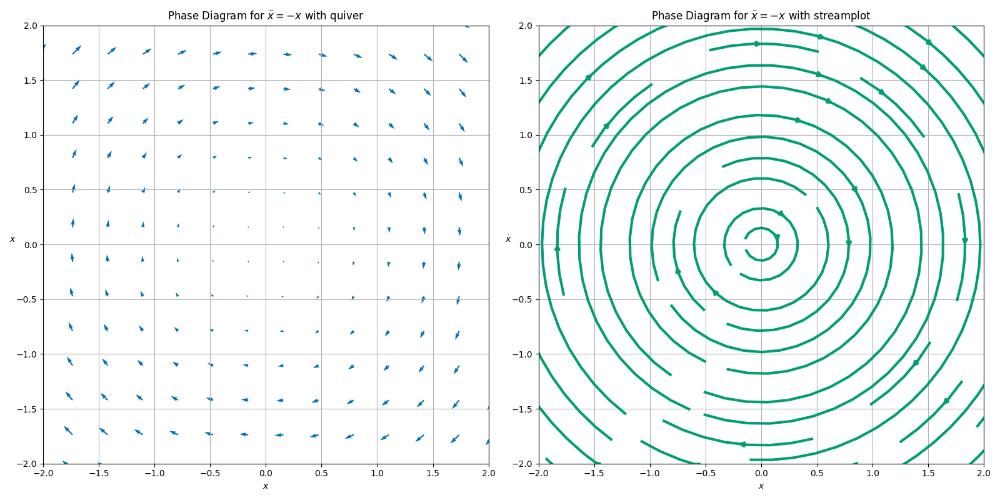

Day 19 - Phase Diagrams#
Synchronization of oscillators#

Announcements#
Midterm 1 is due Feb 28th
Homework 5 due Mar 14th
Office hours today at 4pm
Seminars this week#
WEDNESDAY, February 26, 2025#
Astronomy Seminar, 1:30 pm, 1400 BPS, Lieke von Son, CCA, Flatiron Institution, Beyond the first waves: where we stand in understanding binary neutron star and black hole formation channels
THURSDAY, February 27, 2025#
High Energy Physics Seminar, 2:00 – 3:00 pm, 1400 BPS, Matthew Lim, University of Sussex Title, Precision at Scale: Towards Automated NNLO Event Generation
Seminars this week#
FRIDAY, February 28, 2025#
FRIB IReNA Online Seminar, 2:30pm., Soham Chakraborty, TRIUMF, TACTIC: a detector for unclear astrophysics, Zoom ONLY: https://msu.zoom.us/j/827950260 Passcode: JINA
Reminders: Flow on a Line#
A first order ODE of the form:
can be thought of as a flow on a line. We can graph the function \(f(x)\) in the \(x\)-\(\dot{x}\) plane. Thus,
So that,
Reminders: Flow on a Line#
Example \(\dot{x} = \sin{x}\)#

Reminders: Flow on a Line#
Example \(\dot{x} = x^3-x\)#

Firefly Synchronization#
Ermentrout and Rinzel (1984) developed a model for firefly flashing.
The basic model suggests that a firefly will flash regularly without stimulus (\(\dot{\theta} = \omega\)).
With a flashing stimulus that flashes at its own rate (\(\dot{\Theta} = \Omega\)), the firefly will attempt to synchronize with the stimulus.
That model is given by
where the difference in the phases (\(\theta\), firefly; \(\Theta\), stimulus) is critical to the model as is the ability of the firefly to synchronize is given by \(A\).
Firefly Synchronization#
It is typical to rescale nonlinear equations to seek natural units. In this case, we choose a dimensionless time,
and a dimensionless phase difference,
Which gives the dimensionless equation for the phase difference \(\phi = \Theta - \theta\):,
Clicker Question 19-1#
Consider the dimensionless equation for the phase difference \(\phi = \Theta - \theta\):
Use the phase space of \(\phi\) vs. \({d\phi}/{d\tau}\) to sketch the phase diagram for the system. Find the equilibrium points and their stability. Consider the 3 cases.
Assume \(\mu = 0\).
Assume \(0 < \mu < 1\).
Assume \(\mu > 1\).
Click when you and your table are done.#
\(\mu = 0\)#
Synchronization always (no phase difference)#

\(\mu = 0.6\)#
Entrainment is possible (constant phase difference)#

\(\mu=1.2\)#
No entrainment (\(\Omega > \omega\)). Stimulus is too fast.#

Why Fireflies?#
The firefly model is a good example of a system that can be modeled with a phase diagram.
It also has a parameter (\(\mu\)) that can be varied to change the system behavior.
The parameter \(\mu\) can be thought of as a “bifurcation parameter.”
A bifurcation is a change in the number or stability of equilibria as a parameter is varied.
It also illustrates the concept of “phase locking”, which is important in many spaces (e.g., lasers, Josephson junctions, etc.).
2D Phase Spaces#
What happens when we have differential equations that are not first order?
We can convert this to a system of first order equations by defining a new variable \(v = \dot{x}\). Then we have a system of two first order equations:
We can still use the phase space method to analyze the system in the \((x, v)\) plane.
Reminders: Phase Space and the Harmonic Oscillator#
Assume a dimensionless harmonic oscillator: $\(\ddot{x} = -x\)$
We convert this to a system of first order equations:
We can graph the system in the \((x, v)\) plane.
Steps for a Sketching a 2D Phase Diagram#
Seperate the system into two first order equations.
At each point \((x, v)\), find the vector \(\langle \dot{x}, \dot{v} \rangle\).
Represent this vector as an arrow in the \((x, v)\) plane. This gives the “flow field” of the phase space.
Continue this process until you have a good representation of the flow field.
Hint: Start with points that are easy to sketch. But we will eventually use a computer to do this.
Clicker Question 19-2#
Consider the pair of first order equations:
Choose the \(x=0\) line; the vertical axis.
Note that there will only be horizontal arrows on this line. Why?
Sketch the arrows on the \(x=0\) line.
Click when you and your table are done.#
Clicker Question 19-3#
Now, SEPERATELY, please do this separately lest we draw historical symbols that we should not. Fascism has no home here, y’all.
Choose the \(v=0\) line; the vertical axis.
Note that there will only be vertical arrows on this line. Why?
Sketch the arrows on the \(v=0\) line.
Click when you and your table are done.#
Clicker Question 19-4#
Now try another line, the \(x=\pm v\) line.
Choose a diagonal line, \(x=v\). $\(\langle \dot{x}, \dot{v} \rangle = \langle v, -v \rangle\)$
Sketch the arrows on the \(x=v\) line.
Choose a diagonal line, \(x=-v\).
Sketch the arrows on the \(x=-v\) line.
Connect the arrows to represent the flow field as closed loops.
Click when you and your table are done.#
Flow field for the harmonic oscillator#

Clicker Question 19-5#

What shape are the arrows tracing out in the phase space for the harmonic oscillator?
A circle
An ellipse
Annoying sibling voice: “A circle is an ellipse, dummy”
We don’t talk like that to each other. 🥰
A spiral?
Clicker Question 19-6#
These curves never touch, why is that? What does a closed curve in this phase space represent?
The motion is orbital
The motion is periodic.
The system has constant energy.
The system’s energy changes throughout.
More than one of the above.